02 · 集合通信调度与重叠：搬的时机比搬的速度更要命
这章解决什么：FSDP 拉满（EP=1）之后，每层前向要借一次专家权重（all-gather），反向再借一次、还一次梯度（reduce-scatter）。带宽不缺，缺的是通信排在哪：没被计算盖住的那段等待，直接加在步时上。
按依赖顺序共十几把刀：先把通信交给 SparseCore、挑对通信形状，再把 RS 本身做快，最后自己写 HLO pass 重排每一个 start / done。大号模型 1 片上这一整套把 TensorCore 上的通信等待从约四成步时压到一成多，步时指数 51 → 37（单片 BF16 最初基线＝100，下同）。
💡一句话结论瓶颈是「排在哪」不是「传多快」；HLO 通信重排的大头是 placement pass，好坏看 cost profile 准不准。
- 约 40% → 约 15% 1 片 TensorCore 上全部 async-done 等待占步时（含本地 gather offload；只算 RS/AG/AR 暴露区间并集是 9%）
- 指数 51 → 37 同一片上整套 HLO 通信重排的效果（约 −30%）
- 约 80% step 里通信在 SparseCore 上跑着
- 约 +20% 喂错 cost profile 的代价
- 约 10% placement pass 一项的价钱（knockout 只关它）
三个口径：满配＝1 片生产配方原样（AOT、pipeliner 开，指数 37）；knockout＝在 knockout 基线（满配再关 XLA pipeliner，指数 45）上只关一项，看慢多少；阶梯＝从满配逐级累积拆。详见 09。
feature 依赖图（箭头＝「先有它，后面那个才成立或才值钱」）：
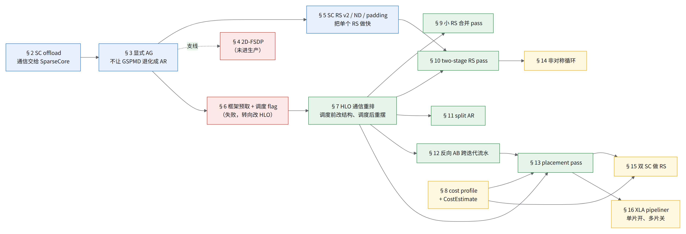
1.问题与设计依据：每一层借一次、还一次
EP=1，每 device 只存 1/512 的专家权重（01）：
前向每层: AllGather(专家权重，FP8 时字节减半) → GMM
反向每层: AllGather(再拿一次，喂算 dX 的 GMM) → TGMM 算 dW → ReduceScatter(专家梯度，与权重同大小)
进门 AG、出门 RS，这种形状叫 AGRS（和 RSAG 的区别见章末问答）。collective 交给 SparseCore（每 device 2 个），TensorCore 同时算别的（Ironwood performance）。
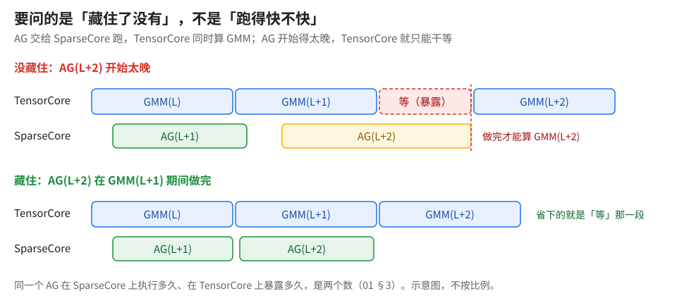
怎么量出来的
| 量法 | 发现 |
|---|---|
| 小号模型 64 芯片 profile | AG 占约 15% 没藏住，而 XLA 已经提前发了 AG-start |
| 小号模型 128 芯片数 AG-done 落点（预取写完之后；一个 profiler 窗口、多步累计） | 五百多个 AG-done 只有 2 个落在 GMM 窗口里；扫了 13 个调度相关 flag（xla_lhs_*、aggressive_scheduling 等）零效果 |
| 大号模型 256 芯片 BF16 基线 | RS 实测是 AG 合计的约 1.4 倍（RS 一趟、AG 两趟，理论上该是一半；按趟折算与元素类型见章末问答），两者都比理论慢，RS 慢得多；暴露的通信合计占该基线步时一半多，其中反向 RS 约六成、前向 AG 约两成、反向 AG 约一成半 |
整章的设计依据：XLA LHS 的三个先天限制，各由哪类 pass 补
XLA 自带的 latency-hiding scheduler（LHS）有三件事做不到，这套方案每类各补一条（1 片上各值多少见 §17）：
| LHS 做不到 | 表现 | 补它的 |
|---|---|---|
| 看不见真实成本 | 内置解析模型对 Pallas kernel（KDA、splash、Tokamax GMM）近似黑盒，估错「盖不盖得住」 | §8 cost profile（上次运行的 trace）＋ §13 placement pass |
| 不跨循环迭代 | 层循环 scan 是一个 while，下一层的 AG 提前不到这一层的计算底下 |
§12 反向 AB 跨迭代流水（placement pass 的 pre-scheduler 半段） |
| 不管 SparseCore 分工和形状 | 大 RS 怎么拆、放哪颗 SC、抢不抢核，它不管 | §9 / §10 ＋ post-scheduler placement |
⚠️上游有什么、没什么（替代路线见 §18）
- 上游没有，需自研：HLO 通信重排（小 RS 合并、two-stage RS pass、placement pass、反向 AB 流水）和 cost profile 喂法，属私有实现（§7）。
- 只用上游的读者把 §7–§13 当理念读，动手先做 §18 的最小版（只挪 start / done）。
- 平台 flag，上游也能用：§2 的 SC offload、§6 的 libtpu 调度 flag、§5 的 SC RS 三件套、§14 的 asymmetric loop、§15 的双 SC（都在 libtpu 侧；§15 有一个变体还依赖 pass 侧的双 SC 通信搜索）。
- 只在这套实现里：§3 的显式 gather（GMM 内强制权重 gather 开关），上游 MaxText 没有；不加它，DP>1 时 GSPMD 会留下全网格 AR。
2.SparseCore offload 基线（通信整个交给 SparseCore）
前置：无。后续：全章所有调度都以「通信在 SC 上跑、TC 只在 done 处等」为前提。
收益：SC offload AG/RS/AR ＋ 关掉 async collective fusion，1–2%。
怎么考虑的：先把 flag 收进一个生产共享 flag 文件作为唯一来源，否则每次 A/B 不知道实际开了哪些。SC 相关 flag 不是越多越好：一次开 17 个直接 OOM，只能挑着开。
原理：一个通信只能交给一个人搬，所以两组开关要成对改。同一个通信有两种实现：TensorCore 边算边发（continuation fusion），或整个交给 SparseCore，二选一。只开 SC offload、不关 fusion 时走哪一条没核，所以两组一起改、一起 A/B。
GPU 上相当于：TensorCore 边算边发 ≈ NCCL kernel 占着 SM 跑；SC offload ≈ 交给独立的 DMA 引擎 / copy engine，不占 SM（类比 [推断]）。
把握：文档证实 · 出处：MaxText benchmarks/xla_flags_library.py SC offload 组合处注释「Either one of CF or SC can be enabled at a time」；只开一组时走哪条未核
3.显式 all-gather：别让 GSPMD 把权重收集退化成全网格 AR
前置：§2。后续：§5、§6 以及所有 HLO pass 都假设专家权重走「AG 进、RS 出」；§4 的 2D-FSDP 和它叠加时会冲突。
收益：约 10%（1024 芯片，data 16 × FSDP 128，单次 A/B），loss 逐位一致。
怎么考虑的：profile 里看到每层出现上百个专家权重大小的全网格 all-reduce。根因是 GSPMD 折不出多轴 psum，FSDP 外还有数据轴时，就退化成在全部 2048 个 device 上做 AR。与其和 partitioner 较劲，不如在 shard_map 里明写一次 AG，让通信形状由自己定。
原理：浪费的条件是 FSDP 外还有数据轴，与跨不跨片无关。下图按反向画（权重 AG 的转置是梯度 RS）：纯 FSDP 无数据轴时本来只有 RS，显式 AG 只搬真正要的那一趟。
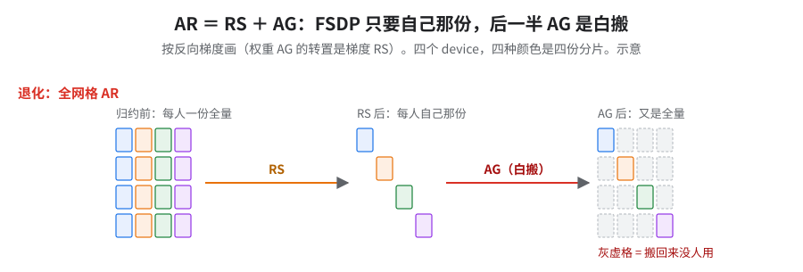
怎么开：打开 GMM 内强制权重 gather 开关（需自行实现，见 §1 警告框）。
同一思路的另外两处
| 改动 | 为什么 | 收益 |
|---|---|---|
| Ring-of-Experts（all-to-all 换成 AG + RS） | 芯片内带宽高，AG + RS 比 all-to-all 便宜 | 8%（小号模型 64 芯片、EP=2 配置，单次 A/B）；只对 EP>1 有意义，EP 降到 1 后关掉 |
| Muon Newton–Schulz：5 次 AR → 循环前 1 次 AG | 原来每次 NS 迭代都要一个 AR；先把矩阵轴复制好，循环里纯本地乘 | optimizer 段约 −15%（细节见 06 §5） |
坑
⚠️快得离谱先查对不对「快约 50%」的真实原因是 megablox 悄悄忽略了
weight_gather_axes，loss 升到接近 6；「约 40% 加速」的真实原因是 KDA 梯度全为 0。
4.2D-FSDP（支线：扩展好但绝对慢，未进生产）
前置：§3。后续：无（未进生产）；但它的三刀和「两个优化叠加会互相抵消」的教训对别的模型有用。
收益：负的。纯 FSDP 整体仍更快。全部是小号模型实验，相关改动都未进生产。
怎么考虑的：ici_fsdp_transpose_parallelism > 1 把 FSDP 拆成两根轴，扩展效率更好：64 → 1024 芯片线性比约 97%，纯 FSDP 约 88%。但绝对值慢：64 芯片慢约 25%，1024 芯片缩到约 15%，仍追不上。多出来的 reshape / transpose copy 要 XLA 介入才能根除（机理见 01 §2）。
补差距的三刀，每刀都在消「多一次搬运」：
| 刀 | 原理 | 效果 | 坑 |
|---|---|---|---|
① GMM 用原始 wi/wo_kernel_axes + weight_gather=True |
2D 下 embed_tensor_transpose 被解析成 None，XLA 在 shard_map 外补一次完整 AG copy |
profile 里 data formatting 约 8% 的回退消掉 | 没有同规模的对照步时；严格 loss 对拍没跑 |
| ② w0/w1 多轴 AG 合成一次 | 原来每根 FSDP 轴各 AG 一次；改成 expand_dims → 单次 all_gather(tuple_of_axes) → reshape → transpose → reshape |
单次 AG 降到原来的约四成；AG 个数 −6%，RS 个数约 −30% | wo 不能合：合并后的 transpose 要一份临时 buffer，OOM，只能逐维 AG |
③ w0/w1 预 swapaxes + GMM transpose_rhs=True |
② 合完后 XLA 还会插 layout copy；权重提前转好，让 GMM 自己按转置读 | 步时 −4%，w0/w1 前向 layout copy 清零 | ② 第 4 步的 transpose 本身仍出 copy（单次约是合并后一次 AG 的四分之一到一半），swapaxes 自己的开销没砍 |
⚠️两个优化叠加会互相抵消单独测都赢的两刀，合起来要重测。§3 的显式 gather 直接叠到 2D-FSDP 上，把 ② 的 AG 优化打回去：单次 AG 慢到约 2.7 倍，步时约 +15%（② 的多轴 AG 合并就是为压低单次 AG 而做的）。
5.SparseCore RS v2 / ND / padding：先把单个 RS 做快
前置：§2、§3。后续：§10 two-stage 的收益是在三件套已开的单段 RS 上再算的；§14 asymmetric loop 拆的也是这个 RS；§15 双 SC 也叠在它上面。
收益：这个 RS 降到约 80%；端到端约 9%（大号模型 256 芯片 BF16，指数 82 → 75）。全书降幅第 3 大的一刀。
怎么考虑的：大号模型的专家梯度 RS，换成小号模型的形状就快一倍。原因是一条 tile 规则：
按 8×128 切 tile 后，tile 总数是 6 的倍数，XLA 才启用
use_n_dimension_strategy（ND 策略，按名字是多根 ICI 轴同时走 [推断]）。小号模型的专家权重形状满足，大号模型的不满足。
- 8×128 是 TPU 内存布局的基本块：最后两维按 8 行 × 128 列切。
- 规则来自实验观察，未见公开文档。
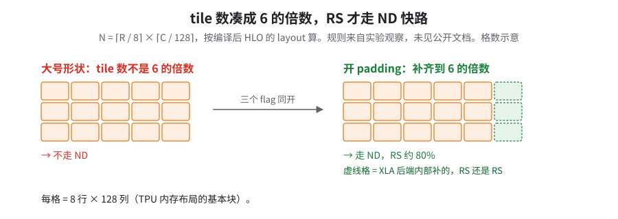
读图：形状改不了，补格全在 XLA 后端内部。
原理：机制未公开，为什么是 6、对应哪块硬件都没有公开资料；判据见下面「换模型时怎么判」第 5 步。
为什么是 6：一个猜想（未核）
每芯片 6 条 ICI 链路（3 轴 × 2 向），tile 数被 6 整除才能按链路均分同时搬，即多端口 torus 的分桶算法；16 个 subcore 不是 6 的倍数，不像来源。检验：二维切片上是否变成 4。
出处：Sack & Gropp《Collective Algorithms for Multiported Torus Networks》（ACM TOPC 2015）；Cloud TPU7x 文档（ICI 拓扑）；JAX Pallas SparseCore 文档（subcore 数）。
怎么开（平台 flag，三个必须同开）：
--xla_tpu_enable_sparse_core_reduce_scatter_v2=true
--xla_tpu_enable_sparse_core_collective_offload_nd_reduce_scatter=true
--xla_tpu_enable_sparse_core_reduce_scatter_padding=true
换模型时怎么判（只要专家权重形状）
- 输入：RS 的张量，即专家梯度，与专家权重同形。取最后两维 R、C，C 是内存里变化最快的那一维（以编译后 HLO 的 layout 为准，不是 Python 里的写法）。
- 算 N = ⌈R / 8⌉ × ⌈C / 128⌉。
- N 是 6 的倍数，预期自动走 ND；否则把三件套一起开。padding 不会自动开。
- 别在 JAX 层自己 pad。书里另一条「48 的倍数」管的是另一件事：开三件套让 XLA 内部补齐就不用管 48。
- 「48 的倍数」只针对 JAX 层手动 pad：每个 device 分片沿 scatter 维的行数只补到 8 的倍数时，
psum_scatter会被降成 all-reduce + dynamic-slice，落到 TensorCore；补到 48（＝ 6 × 8）的倍数才保留 SparseCore 原生 RS。 - 补对了单个 RS 与自动 padding 相当，但 pad / copy 开销让成对总时间仍慢约 15%，端到端没收益（下表）。补到 48 后是否走了 ND 没直接核 [推断：RS 时间与 ND 基线相当]。
- 手动 pad 只能补每个分片自己的行。reshape 后只在全局尾部补零会挪动分片 / 专家边界，语义不等价。
- C 的要求、要不要乘前导专家维仍未核（单个实验；核法见 05 §10「怎么核」）。
- 「48 的倍数」只针对 JAX 层手动 pad：每个 device 分片沿 scatter 维的行数只补到 8 的倍数时，
- 判对没有：编译 dump 里该 RS 的后端配置有没有
use_n_dimension_strategy；或用自己的形状单测一个 RS，三件套开 / 关各跑一次，降到约 80% 说明原来没走 ND，不变说明原来就走了或没开上。
RS 各手段放在一起比（单个 RS 的时间，基线＝100%；后三行分别在 §10、§14 展开）：
| 手段 | 这个 RS 的时间 |
|---|---|
| 基线 | 100%（关掉三件套后是整张量 all-reduce，时间与基线相当） |
| 三件套（padding 必须同开） | 约 80%；端到端约 −9% |
| JAX 手动 pad | 更慢（落 TC 路径时慢到 14.6 倍）；端到端 +3% |
| two-stage RS，14 种顺序（§10） | 只有 YZC128 → X4 赢（约三分之二；对三件套已开的单段 RS 约 80% 而言，即快约 15%），反过来约 160%（以未开三件套的基线为 100%；比三件套已开的单段 RS 慢一倍） |
| libtpu 0.0.47 + asymmetric loop（§14） | 不拆的整块约快 25% |
YZC128 ＝ Y/Z 两轴加 core 合成的 128 路（C 指 core，不是 §5 的 column）。
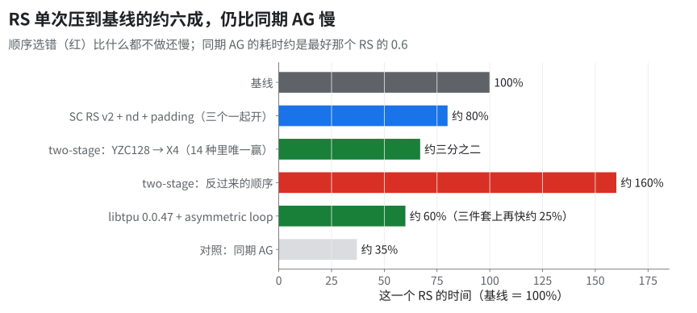
坑：三件套关掉时 trace 里是整张量 all-reduce，而不是报错；只看步时分不出「ND 没开上」和「本来就慢」。
6.框架层预取与 libtpu 调度 flag（失败的路，以及为什么转向改 HLO）
前置：§3。后续：它的失败定义了 §7 要解决什么。
收益：框架层预取 0（scan 版步时不动，指数约 22，小号模型开发期起点＝100）；libtpu flag 绕法 6%（小号模型，单次 A/B），但拿显存换、还跨不过循环边界。
怎么考虑的：最直接的做法是在 JAX 层预取下一层权重。scan 里塞预取，多组 A/B 步时都不动，AG 约 90% 暴露；改成 Python unroll，几十个预取 AG 能全落进计算窗口（AOT 口径），但又冒出假依赖（调度器以为后面的预取要等前面的计算，其实不必），把提前抵消了。在 JAX 层试过去掉 lax.cond／optimization_barrier／shard_map，也试过人为加假依赖固定顺序，都无效。
原理（根因）：
🤔预取为什么不灵
- 每个 KDA 周期是独立 while body 被分别特化：第 0 个周期 AG 能重叠，从第 1 个起 AG 要到 gmm 之后才发出。
- 根因在调度器的作用域：LHS 按 computation 逐个调度，while body 是单独一个 computation，指令挪不过 while 边界。要把下一圈的 AG 提到这一圈，只能靠 collective pipeliner 的跨迭代改写（kBackward 方向），而它只认特定模式。所以 JAX 层怎么改，循环体内的先后都不动 → [推断] 只能直接改 HLO。
把握：源码证实（调度作用域）· 出处：openxla/xla
latency_hiding_scheduler.cc逐 computation 收集、调度的循环；collective_pipeliner.h的 kBackward 说明
从 XLA 侧看还有两条更具体的原因 [未核]：
- ① 专家权重 AG 的输入是 loop-variant（每圈换一层权重），XLA 的跨迭代流水只接循环不变量，所以排不过去。未核 XLA 源码；开源 collective pipeliner 类注释的示例里，被流水的正是每圈都变的输入，所以这条更可能是 TPU 侧 AG 流水的专门限制，不是通用规律。
- ② scan 里本地 offload gather 和 offloaded AG 抢同一个调度优先级。
- 建议：先把两者解耦再开
xla_tpu_enable_ici_ag_pipelining，并给 Pallas kernel 手动填 cost estimate（缺省成本近乎为零，见 §8）。
怎么开（libtpu flag 绕法）：针对「MoE 权重 AG 从第 2 个 scan 组起暴露」（根因在编译器调度，上游尚未修复；上游 PR maxtext#4493 想从框架侧给 scan 层加权重预取，尚未合入）：
--xla_tpu_rerun_latency_hiding_scheduler_post_sc_assignment=true（按名字是「分配完 SparseCore 后再跑一遍 LHS」[推断]）--xla_tpu_use_single_sparse_core_for_reduce_scatter_offload=false- 给 Pallas kernel 补
cost_estimate
- 绕法的 6% 是拿峰值显存换的（多占一截）；再开
xla_tpu_enable_ici_ag_pipelining=true直接编译期 OOM。 - 预取用 f32 双缓冲编译 OOM，换成 BF16 缓冲（减半）才编得过；多个预取 AG 同时在飞也会撑爆显存。
- flag 只能在 XLA 已有的调度空间里挪，跨不过循环边界——这就是 §7 起改 HLO 的理由。
7.HLO 通信重排：调度前改结构，调度后重摆
HLO 通信重排是一组私有的 XLA HLO pass，未开源，改的是集合通信的切法、落点和调度顺序；本书只讲理念和判据，实现需读者自行开发。
前置：§6 的结论（必须改 HLO）；生产里它只在 AOT 产物里开，交叉 AOT 编译见 06 §8。后续：§8–§13 的 cost profile 和各项重排都属于它。
收益：整套在小号模型 64 芯片上约 10%（单次 A/B，loss 平均差在十万分之一量级），在大号模型 256 芯片 BF16 上约 25%（指数 73 → 55，CI 口径；profile 口径指数 75 → 55；和 CPU AOT、full remat 一起开，收益未拆，口径见 README）。
解决什么：XLA 调度器的三个盲点（§1 表）都不是 flag 能补的，要在 XLA 编译流程中间插手。
- 调度前能改结构：外提只依赖权重的 AG、拆 / 合 RS、跨迭代流水（§9–§12）。
- 调度后能看到 XLA 的真实排序和 SparseCore 分配，拿它当合法起点再重摆（§13）。
- 两处共用一份成本真值：上一次运行的 trace（§8）。
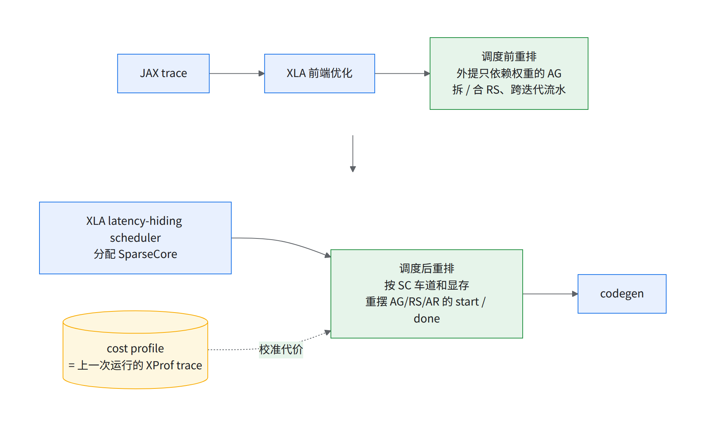
- 改通信什么时候跑（挪 start/done）和在哪颗 SC 上跑，只动顺序和核绑定。
- 改通信本身的形状（一个 RS 拆成两段、几个 RS 合成一个）需要新的后端配置：SC 怎么切块、走哪些环、路由表。这份配置只有闭源的 libtpu 会写，格式不公开、跟版本走，写错不报错，要么算错要么卡死。
- 所以不手写，让 libtpu 替自己生成再拿来用，代价是编译多一遍；这一遍能并进同一次编译，整次编译省约 10%（06 §9）。
- 后端配置只看「哪种通信 + 哪组芯片」，不看大小：大号模型 FP8 单片全程序上千个 SC 通信只有 6 种配置（只看了一种拓扑、一个 libtpu 版本）。
- 钱不在这里：改形状最费工程，值钱的是改落点（§13.4）。
- 每次改配置后看 pass 自带的计数（选中几对、动了几条指令），为 0 就当没生效。
- 只改顺序的几项，loss 应逐位一致；改形状的几项，开 / 关各跑一步比 loss。
- XProf 里 TensorCore 等 done 的时间下降（口径同 §17.1 的暴露列）。
- 在哪种模式下实际生效见 §16 的 KEY 框。
坑（静默失效：这套 pass 出错时多半不报错）
⚠️静默失效清单
- 算错值：split-AR 只能改写真正的 AR，不能把静态
slice当成 RS、把 iota replica group 读成全网格；零趟循环不能被执行一次。犯其中任一样数值直接错，所以 pass 一律 fail-closed（判不清就不动）。- 没生效也不说：AOT 产物如果没带同一套 HLO 通信重排配置，重排静默跳过，跑的是没优化的图。
- 污染缓存：pass 的探测编译不能写进共享的持久编译缓存，可执行文件不能缓存在 baseline 的 key 下，否则下次命中的是错的那份。key 若不含 HLO 通信重排配置，命中的可能不是你以为的那份 [推断]。
- 选中 0 对：两阶段 RS 的拆分段被 placement 的普通 192 MiB 大小阈值过滤掉，专用路径一对都没选中，日志不报错。
- 只搜了一半：嵌套的完全外提 1→1 链里找不到上一个 stage 的 producer，搜索悄悄退化成只看下一个 stage 那一段、不报错（13 §2.2）。
- 显存检查形同虚设：显存估算器把 6 种 FP8 dtype 按 0 字节算，用这些类型时 HBM 准入等于没查；生产用的两种认得，没踩到 [推断]。
防法：看计数，为 0 就当没生效；loss 逐位比对。
8.cost profile：拿上一次运行的 trace 给调度器当价目表
前置：§7（placement 是它的主要消费者）。后续：§13 placement 的打分、§15 双 SC 能不能兑现、§16 多片排法都看它准不准。
收益：同一份代码只换成新抓的 profile，约 7%（大号模型 FP8 1 片）。反过来喂错的代价更大：用旧配置的 profile 编改过的 HLO，步时约 +20%。
怎么考虑的：XLA LHS 默认靠内置性能表加解析模型估时（OpenXLA · LHS Cost Model），对 Pallas kernel 近乎看不见。最省事的真值是上一次真跑的 trace，等于在 TPU 上给自己的 pass 做 PGLE。JAX GPU 的 PGLE 手动模式也是跑两次（JAX · GPU performance tips）；profile 与 HLO 对不上会怎样，上游没写 [推断：都会过期]。
| 现象 | 只变了 | 步时 |
|---|---|---|
| 用旧配置的 profile 编小 RS 合并后的 HLO | profile 与 HLO 失配（两边源码 / libtpu 也不同，非单变量） | 约 +20% |
| 用同配置新采的 profile 重编 | profile 迭代一轮 | 1–2% 变慢（不单调） |
| 大号模型 FP8，同一份代码 | 仅 AOT cost profile | 约 −7% |
| 大号模型 BF16（代码也变了） | profile + 代码 | 约 −20%；另一组约 −8% |
[推断] 每日跑的步时来回摆动（最快一档比最慢一档快约四分之一），多半是 profile 刷新时点。固定 placement 也不行：报「computation set mismatch」（两边 computation 计数对不上），跨 libtpu 名字就变。
原理：调度器没有时钟，只有一张估计表；表一旧，就只变慢、不报错。表里记着每个算子、每个异步通信各要多久。start 与 done 之间计算的估计耗时盖过通信估计，才算藏住，所以 start 提前多少全看表。
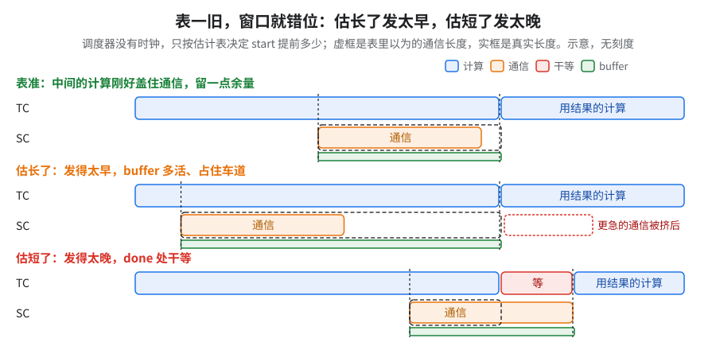
读图：比每行虚框（表里的长度）和实框（真实长度）。
GPU 上相当于：JAX GPU 的 PGLE（拿上次 profile 的实测耗时喂 LHS）；区别是这里私有的重排 pass 也吃这张表，而且要按配置分开抓。
把握：源码证实 · 出处：openxla/xla latency_hiding_scheduler.cc 的 ApproximateLatencyEstimator::NodeCost / GetLatencyBetween 与 ReadySetLt::AIsBetterThanB（kLessStall 规则）；限开源框架，TPU 版代价表未公开
两样输入：耗时和显存，各从哪来
| 来源 | 要不要上 TPU | |
|---|---|---|
| 耗时 | cost profile = 真实训练抓的 trace（*.trace.json.gz），按 fusion 签名逐条匹配；查不到就退回粗估公式（03 里的 SC miss） |
要，一次。之后每次 CPU 编译复用 |
| 显存 | 从 HLO 静态估算：形状 × dtype，定义到最后一次使用 = 寿命，不用 profiler | 不要 |
- 每种配置各要一份 trace：1-SC / 2-SC、BF16 / FP8 分开；小号模型的 5 片配置借用的是 2 片的 trace。
- 4 GiB 余量兜底估算误差和运行时零碎占用，要拿实测校准。
怎么用：编译时把这份 trace 作为 placement 的成本输入。
新写的 Pallas kernel 一律带 CostEstimate：缺了，cost model 等于看不见它，估「哪段计算能盖住哪个通信」全失真。
- 实例：KDA 短卷积融合缺 CostEstimate、又叠一份过期 profile，大号模型 FP8 单片上两项一起补上后快约 15%。两个原因叠在一起，缺 CostEstimate 单独占多少拆不开。
为什么：没报耗时的 kernel，在调度器眼里瞬间完成，盖不住任何通信。
- 机理：Pallas kernel 在 HLO 里是 custom-call，开源估算器给它记 1、给异步通信记 5000，通信只好挪去别处找掩护。
- 填什么：
CostEstimate填的不是耗时，是 flops、transcendentals、bytes_accessed、remote_bytes_transferred 四个量；它写进 custom-call 的后端配置，由后端自己换算成时间（仍是估计，不是实测）。所以要填真实的计算量和字节数，别去凑一个「耗时」。- 未核：后端是不是按 roofline 换算、cost profile 命中时会不会覆盖它。
- 判据：同一个 kernel 给两组不同的 CostEstimate，看 HLO 调度里它前后的 start / done 位置动不动。
把握：源码证实 · 出处：openxla/xla
latency_hiding_scheduler.{h,cc}的kLowCost/kHighLatency与NodeCost；jaxpallas/core.py的CostEstimate、tpu_custom_call.py写 backend_config 处；限开源估算器，TPU 后端怎么估未公开
- 自动导出的 trace 要按 TPU plane 逐个重新导出再喂，成本解析器读不完整自动导出版。只换成重导版（同代码）：大号模型 FP8 快不到 1%，单次对照。成本解析靠的是每个 TPU plane 上 TensorCore、SparseCore 两条线的逐条事件时长，加上完整 HLO 指令文本（拿它和 HLO 对上号），重导时这些不能丢。
- profile 文件在不算数，要看命中率（精确命中 / 归类回退 / miss 分开计，报法见 03），偏低就重抓。
- 换了 SC 数、精度、片数，旧 profile 可能比没有还糟（§15、§16）。
考考自己
同一份代码、同一台机器，今天正常、明天慢约两成，训练日志和 loss 都正常。你第一个查什么？ 答：cost profile 换没换、与 HLO 匹不匹配；其次比两次编译的 placement fingerprint，看摆法变没变。
9.小 RS 合并 pass（把小 RS 合成大 RS）
前置：§7。后续：无（它值不值钱由 §13 placement 留的空档决定，见下面「原理」）。
收益：正负号会翻，knockout 上关掉它反而快 1–2%（大号模型 FP8 1 片 AOT，knockout 基线 45 只关一项）；显存上它是省的，见下面的「坑」（06 §10）。
怎么考虑的：反向每层有好几个专家梯度 RS，各自一次发起开销、各占一次 SC 车道。合批能把几百个小缓冲并成几十个，省发起次数也省显存。
原理：合并后发起次数少了，但几个 RS 被绑在层尾一起发，窗口在就藏住、窗口被别的通信占着就整块暴露 [推断]。所以它的价值取决于 placement、pipeliner、车道顺序给它留了多少空档（§17）。
怎么开：HLO 通信重排里的一项，上游没有，需自研（理念见 §7）。
坑：关小 RS 合并，编译期 temp 多约 7 GB，HBM 紧时更不能关。
10.two-stage RS pass（大头走宽路，小尾走窄路）
前置：§5（三件套已开）、§7（改形状要借 libtpu 生成的后端配置）。后续：§14 非对称循环和它治同一个病；§13 placement 要能选中它拆出来的两段。
收益：单个 RS 约三分之二（对未开三件套的基线；对三件套已开的单段 RS 约 80% 而言，即再快约 15%）。整步看组合：placement 关着时拆它变化不到 1%，knockout 只关它慢 1–2%，正负号会翻。
怎么考虑的：切片是 2 核 × 4 × 8 × 8，X 只有 4，是个扁盒子。libtpu 自己也会多相走环，但照顾不好 X 这条短边。这不是 bug，是默认算法在不匀称拓扑上的性能缺口。于是把一个 RS 拆成两段，扫了 14 种轴顺序，只有一种赢。
原理：大头走宽路，小尾走窄路。two-stage 先让全量数据走 Y/Z/core 的 128 路（Y、Z 是片内两根长 ICI 轴，core 是每芯片 2 颗核，合起来 128 路；这里的 C 指 core，不是 §5 的 column），几根轴带宽相加；缩到 1/128 后再走短轴 X4，只付延迟 [推断]。
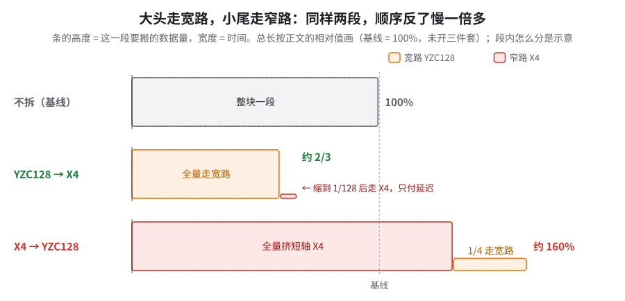
GPU 上相当于：常见的分层 reduce-scatter，先在节点内 NVLink 上做、数据缩小后再跨节点（类比）。
把握：公开资料 · 出处：Scaling Book「Sharded Matrices」章多轴集合通信带宽相加、小分片受延迟主导；asymmetric loop 部分是推断，机制未公开
怎么开：HLO 通信重排里的一项，上游没有，需自研；拆出来的两段要借 libtpu 生成的后端配置（§7）。
bounded two-stage：只拆够大的 RS。拆分有大小门槛：生产默认 500 MiB；A/B 倾向 100 MiB（快 1–2%，接近噪声），没有定论，没进生产配置。
- RS 拆得更细，净变慢，拆分要算总账：同一层反向窗口里，asymmetric loop 下每个大 RS 快 1.5–2 ms，但多冒出十来个小 RS，合计开销反而更大（整步慢不到 1%）；小通信各有固定开销、各占一次 SC 车道 [推断]。
- 拆分段被 placement 的 192 MiB 阈值滤掉、一对都没选中（§7 静默失效清单）。
11.split AR：输出要分片的 AR 拆成 RS
前置：§7。后续：无。
做什么：输出本来就要分片的 AR，拆成 RS（＋需要时再 AG），省掉白搬的那一半（同 §3 的道理，用在 HLO 层）。和小 RS 合并、two-stage RS pass 一起作为附带 pass 开；单独收益没拆过。
坑：它只能改写真正的 AR；把静态 slice 当成 RS、把 iota replica group 读成全网格都会让数值直接错，所以实现是 fail-closed（判不清就不动）。开之前 loss 逐位比对。
12.反向 AB 跨迭代流水：把下一层的 AG 藏进这一层的计算
前置：§6（LHS 跨不过循环边界）、§7。后续：§13 placement 在它改出的新循环体里再排；它是 placement pass 的 pre-scheduler 半段。
收益：knockout 只关它（placement 内的反向 while 流水开关）慢约 5%（大号模型 FP8 1 片 AOT；见 09 的 knockout）。
怎么考虑的：反向逐层循环里，这一层的 RS 必须在本次迭代内 done，盖不到下一层的计算——只调发出时间没用，要改循环结构。
原理：每层反向拆成 A（这层的权重 AG）和 B（算出 RS/AR 输入的那段计算），第 i 层的 B 和第 i+1 层的 A 放进同一圈并行：
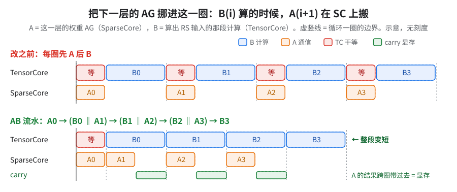
读图：上下两条 TensorCore 线的终点差，就是藏进 B 底下的那几段 A；绿色 carry 是代价。
- 切口按最小割选：计算是点，数据流是边；被切断的边 = 要带到下一圈的数据（carry）= 显存，所以「少占显存」就是最小割。
- 在省显存和两半均衡之间取舍：两半计算差太多，A 藏不进 B；所以给出从最省显存到最平衡的一排切法，再挑。
- 值不值得切：每圈能藏住的是 min(通信, 同圈可用计算)，乘上圈数才是收益；省得太少的、覆盖率不够的、显存放不下的，都不要。
怎么开 / 调参：carry 预算 ≤ 8 GiB，6 GiB 是更保守的一档（参数见 11 A02）；越大能重叠越多，但吃同一块 HBM 余量 [推断]（余量怎么来，见 06 §1）。
- 这个预算真在起作用：大号模型 10+ 片 AOT 中间档里选中切法的 carry 峰值贴着 8 GiB 上限，上百个候选因超预算被剪。换模型先看编译日志里这两个计数：选中切法的 carry 峰值、因超预算被剪的候选数。贴顶说明还有重叠被预算挡着。
- 换模型怎么定预算 [推断：书里没有换算公式]：从 8 GiB 起；carry 峰值贴顶、且编译期 HBM 余量（容量 − 编译报告的峰值）还有富余，就往上调一档重编；碎片明显涨（大号模型上 placement 让碎片约 4 → 9 GiB，§13）或编译 OOM，就退回。
坑：把反向 AG 流水做成 HLO pass 的实现，在完整层数上 OOM（4×8×8；同一改动在 4×4×4 小配置上能过，见 06 §11）。
13.placement pass：在 XLA 排好的序列上重摆每个 start / done
前置：§7、§8（耗时表）、§10（候选里要有它拆出的两段 RS）、§12（循环结构）。后续：§15 双 SC、§16 pipeliner 开关的取舍都绕着它。
收益：全章最值钱的一刀，约 10%（大号模型 FP8 1 片 AOT：knockout 只关它，指数 45 → 50；倒着拆的阶梯里也约 10%）。
- 和小 RS 合并 / two-stage RS、CPU AOT、full remat 一起开时（单项未拆），大号模型 BF16 指数 73 → 55；其中 MoE 段省下的时间约占原步时 30%（profile 口径指数 75 → 55，MoE 省得比整步多，差额是其余模块略涨）。
- 拆开看：RS 暴露约 −70%，AG 暴露约 −55%；RS 拆段后事件数翻倍，单次暴露降到约 1/6。
怎么考虑的：越早发不等于越好——早发占显存、抢 SparseCore 车道，且盖不过循环边界。所以不改 XLA 调度器，拿 LHS 的结果当合法起点，用一个知道 SC 车道和显存的模拟器打分，在区域内 beam search 挑摆法，变差就保留原样 [推断：XLA 调度器不建模 SC 车道]。时间第一，显存兜底。
13.1 start / done 到底在等什么
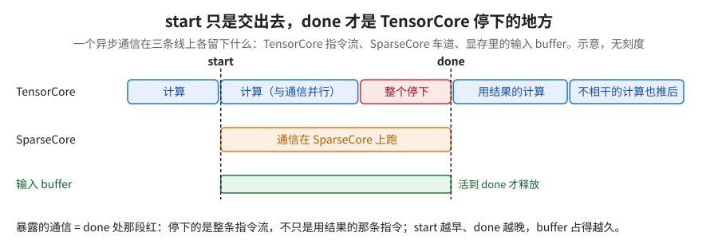
读图：红格前后两条虚线就是插件能挪的两个点；绿条是输入 buffer 的寿命。
- 谁在等：每颗芯片各自的 TensorCore。等待不是全局的，但一颗慢了数据晚到，别人的 done 也跟着拖；模拟器不建模跨芯片快慢差。
- 信号量：XLA 自带的 SC offload 内部怎么同步没公开（闭源 libtpu）。公开的 Pallas TPU 模型（这套方案的 ring dispatch 和 all-to-all 原语用它）：
- 每次远程拷贝带两个硬件计数器：
send_sem（我发出的数据走完了，源 buffer 可以覆盖）和recv_sem（发给我的数据落地了，可以读）； - wait = 计数器到值才往下走；屏障 = 每人给所有同伴各加一，然后等到同伴总数；
- XLA 的 done 用的是同一套原理 [推断]。
- 每次远程拷贝带两个硬件计数器：
13.2 为什么不能「拿到就发」
| 约束 | 体现在哪 |
|---|---|
| 显存 | 硬上限 = 容量 − 4 GiB，即 96 − 4 = 92 GiB；提前发的包和跨迭代带过去的数据都占显存 |
| 攒包 | DCN 每次通信有固定开销（§16、03 §2）→ 私有的 DCN all-reduce 合并 pass 合包；前向小统计量合成 2 个 AR（03） |
| 抢车道 | 每颗 SC 一次只跑一个通信；早发的占着车道，更急的只能排队 |
| 循环边界 | 反向逐层循环，这一层的 RS 必须在本次迭代内 done → 要改结构（§12） |
AG 早发不等于藏住：不开 HLO 通信重排时同一层几个 AG 约 8 ms 内全发出，done 仍在每个 gmm 前干等几毫秒。
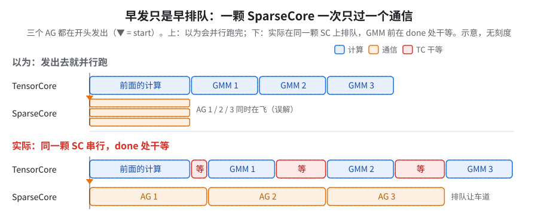
读图：下半每格红都是 done 处干等——三个 AG 在同一颗 SC 上串行，瓶颈在车道。
为什么：开源 LHS 给每类异步通信设了「同时在飞几个」的上限，缺省都是 1，同类通信天然排成一队；后面的照样等，等到 gmm 要用时还没轮到就暴露。谁先谁后靠打平规则，换个编译就可能翻（09）。
GPU 上相当于：同一个 process group 的 collective 共用一条 NCCL stream、按发起顺序执行，发得早只是排队早（类比）。
把握：源码证实 · 出处：openxla/xla
latency_hiding_scheduler.h的SchedulerConfig各*_overlap_limit缺省值；限开源调度器，TPU 怎么给 SC 车道建模未公开
13.3 怎么搜：为什么这样排能赢
- 尺子是一个模拟器：TensorCore 按 profile 逐条推进；start 要等 SC 车道空出来；集合通信在 done 处的等待记为 exposure。
- 为什么要搜，不能贪心：同车道通信互相挤占，贪心会被前面的决定锁死，穷举又会爆炸，所以保留一批部分方案往下走（beam search）。单独把 AG 提前常常看不出收益，要等后面的 RS 也放好才兑现，所以「方向新」的候选也要留着。
- 显存不能按中间态剪：没排完的通信还自由，中间态峰值是假的，按它剪会剪光合法终态；搜完再严格查。
比较先后（字典序）：
| 序 | 比什么 | 理由 |
|---|---|---|
| 1 | 整步时长 | 唯一真目标 |
| 2 | done 余量 | profile 有误差，要留余量：start→done 之间的计算盖住「通信 + 1 ms」，多出的不加分 |
| 3 | 显存峰值 | 各区域抢同一份全局显存，打平时省下的留给别人 |
| 4 | exposure | 不在关键路径上的等待不拉长整步 [推断] |
| 5 | 动得少 | 改动越少风险越低 [推断] |
ICI 和 DCN 分开排：DCN 一次几十 ms，ICI 几 ms，混在一起排的话 DCN 说了算。所以先排 ICI（假装 DCN 不花时间），再逐个给 DCN 找重叠，并限制它对 ICI 的累计退让。
收尾：刚好盖住，再留 1 ms 保险，不是越早越好。done 在不变慢的前提下往前拉，缩短 buffer 寿命，再做完整的显存检查（例外见 13.6 的坑）。
调度的最小单位是 start 和 done 两个点，各挪各的，只能在「输入算好之后、第一个消费者之前」的窗口里滑；排的是全部 SC 通信（上千个）。
13.4 三个子项各值多少
knockout 只关一项（大号模型 FP8 1 片 AOT，基线 45）：placement 搜索（关掉它，前向权重 AG 又拖回 gmm 前才发）约 +8%、反向 while 流水（§12）约 +5%、ICI 重搜不到 1%。三项之和大于整体关 placement 的值，互有重叠（见 09 的 knockout）。
钱在排序，不在两段式：借 libtpu 后端配置只为改形状服务，挪 start/done 用不着——最费工程的不是最赚钱的。placement 在 knockout 上只关它约 10%，two-stage 只关它 1–2% 且正负号会翻。
13.5 FP8 QAG 也要能被排到
- 问题：decoder 循环里 FP8 QAG 的 AG 不是候选，AG-done 干等约占步时一成；同样的 FP8 AG 在别的区域被挪了。QAG 前面那串量化挡住了「只依赖权重」的追溯 [推断]。
- 修法：placement 认得量化器，FP8 路径也被调度；字节表合成一张。
13.6 挪 RS drain：两把小刀，各值不到 1%
- 两阶段 RS 的第一段
call-done下沉、跨过后继 prologue 计算：快不到 1%。 - 后继短循环局部展开几圈，藏住尾部 6 个 RS，尾部暴露清零，快不到 1%（opt-in，loss 逐位一致；验证过，未进生产默认）。
- 坑：下沉的 done 会被收尾拉回原位。
- 现象：调度器选中把 RS
call-done往后沉，收尾那步「done 往前拉」又把它拉回去；分析模型里两种位置 makespan 一样，不报差异，上 TPU 等待重新暴露（尤其反向 while 流水生成的那组循环，指纹见 09 §2.1）。 - 修法（未见 TPU 实测）：只在显存准入（保留输入 / 整段 live range）需要时才提前，并报出「保留的下沉 done」与「为显存收回的」各几个。
- 教训：模拟器打平 ≠ 实机打平，打平时别改动已选中的位置。
- 现象：调度器选中把 RS
- HBM 碎片：总分配多一截，碎片约 4 → 9 GiB（同时存活的大 buffer 4 → 7 个）；没有正式修法。
- 自写 pass 负责 overlap，所以 XLA 的
all_gather_decomposer,collective-pipeliner-forward这两个 pass 关掉；关后 DCN DP 的 AOT 不 OOM（单片代价见 §16）。
考考自己
-
为什么不能把所有 start 都提到数据一产生就发？ 答：四个约束——显存（输入 buffer 活到 done）、抢 SC 车道、小包要攒、循环边界盖不过去。
-
改 RS 形状时，为什么不自己手写后端配置？ 答：格式不公开、跟 libtpu 版本走，写错不报错；让 libtpu 现场生成，代价只是多编一遍。
-
搜索中途显存超限了，能不能直接剪掉这条路？ 答：不能。中间态还有通信没排定，峰值是暂时的，后面一步可能降回来；按中间态剪会把合法解剪光。
-
两段式和挪 start/done，哪个更值钱？ 答：挪 start/done。单片 knockout 只关 placement 约慢 10%，两段式 1–2% 且正负号会翻。
14.SparseCore 非对称集合通信循环（asymmetric loop）
前置：§5；和 §10 治同一个病。后续：无。
收益：单个 RS：不拆的整块约快 25%，two-stage 拆过的大 RS 再快约 10%。整步：knockout 只关它约慢 10%（大号模型 FP8 1 片 AOT，指数 45 → 50，见 09 的 knockout）——以这个数为准。
怎么考虑的：libtpu 自带的这个开关也在治「各轴不等长」：叠上 two-stage 后收益从约 25% 缩到约 10%，两者像是治同一个病 [推断]。
原理：实现没公开。已知它只加速 RS，AR 和显存不变（见 09 的 knockout）。它是实验性开关，单独开不保证整步提速（见下面的坑）。
怎么开：libtpu ≥ 0.0.47 + --xla_tpu_collective_asymmetric_loop=true（11 A07）。
- placement 关着时它让整步约 −10%（单次 A/B，AOT）；在旧 libtpu / pass 组合上拿它替换 two-stage 反而慢不到 1%：收益被 placement 重排吃掉。
- 全书汇总表里的约 7% 是 2 片 JIT（HLO 通信重排强制关）对并发基线，对独占基线约 10%。并发基线是与另外三个 2 片作业共享 DCN 的时段测的，独占基线是单独占用时测的。knockout（基线 45）只关它约 10%（见 09 单片复现）。以 1 片 AOT knockout 为准：这把刀值钱，「被吃掉」是旧 libtpu / pass 组合下的结果。
- 单个 RS：微基准和 JIT 对照实测都约快 25%（见 09 的 JIT 对照）。
15.双 SparseCore 做 RS
前置：§5、§8（profile 必须是双 SC 图上抓的）、§13。后续：多片生产配方（03）。
收益：1 片快约 4%，基线是生产每日回归（单 SC）的指数 36，开后 34，是单片最快点，但不是生产默认。这是双 SC、新 profile、双 SC 通信搜索三项叠加，没单独拆价；10+ 片上 RS 单次快约 15%，但和一大批别的改动一起开，整步收益未拆（03）。
怎么考虑的：每 device 两颗 SC，原来 RS 只用一颗。有两种做法：在 placement 的队列搜索里保留 XLA 原本的双 SC 分配（新 pass 选项），MoE RS 不再被挤到同一颗通信 SC——整步慢 2–3%；在 libtpu 侧直接让 RS 用两颗 SC，并叠一个专门的双 SC 通信搜索——变快。
| 保留 XLA 分配（变慢） | libtpu flag + 自己的 profile（变快） | |
|---|---|---|
| 改了什么 | placement 选项：保留 XLA 原本的双 SC 分配 | libtpu flag --xla_tpu_use_single_sparse_core_for_reduce_scatter_offload=false；1 片配置还叠了专门的双 SC 通信搜索 |
| cost profile | 沿用已有的单片 profile，没在双 SC 图上重抓 [推断：这份 profile 采自哪种图未确认] | 单片换了新 profile；10+ 片换成同配置自采的 profile |
| 片数 | 1 片 | 1 片、10+ 片 |
| 结果 | 整步慢 2–3% | 单片指数 36 → 34；10+ 片上 RS 单次快约 15%，但 profile 和图对不上时，host recv-done、等 AG 吃掉大半收益，换成同配置自采的 profile 才兑现 |
- [推断] 主因是 cost profile 和图是否同配置（§8「1-SC / 2-SC 各要一份 trace」；10+ 片上用错 profile 时 SC miss 上万次就是反例）。其次两种做法改的不是同一层（pass 选项 vs libtpu flag + 专用搜索），也都不是单变量。
- 结论：双 SC 不能单独开关比，要和对应的 profile 一起换；新模型先在单片上带自己的双 SC profile 测一次。
原理：拿单 SC 的 profile 排双 SC 的图，像拿旧地图导航：车道数变了，表里的等待全错。SparseCore 是独立控制线程，自带 DMA，搬数据不占 TensorCore。RS 只快约 15% 而不是一倍，一个可能的解释：瓶颈若在 ICI 链路，第二颗 SC 只多一路发起、不多带宽 [推断；没拆开]。判据：双 SC 下单个 RS 的有效带宽是否已接近链路峰值。GPU 对应物同 §2。
把握：推断 · 出处：Cloud TPU Ironwood 性能文档与 JAX Pallas SparseCore 文档（SC 是独立线程、自带 DMA）；本书 §8、03；SC 分配逻辑在闭源 libtpu 里
坑：换 remat 策略也会连带改 SC 分工（两颗 SC 执行时间比从约 3:4 偏到约 6:1，见 06 §2）。
16.XLA collective pipeliner：单片开，多片关
收益：1 片开着比关着快：关掉它慢约 25%（大号模型 FP8 满配，指数 37 → 45）。多片相反：关掉它 2 片、8 片各快约 9%；关着时 1 → 2 / 8 片弱扩展约 96% / 约 90% [推断]。
实测平台：9,216 芯 pod 上 1 片 AOT 满配（逐 pass 拆价），加 1 / 2 / 8 片 pipeliner 开关对比。多片无 XProf。
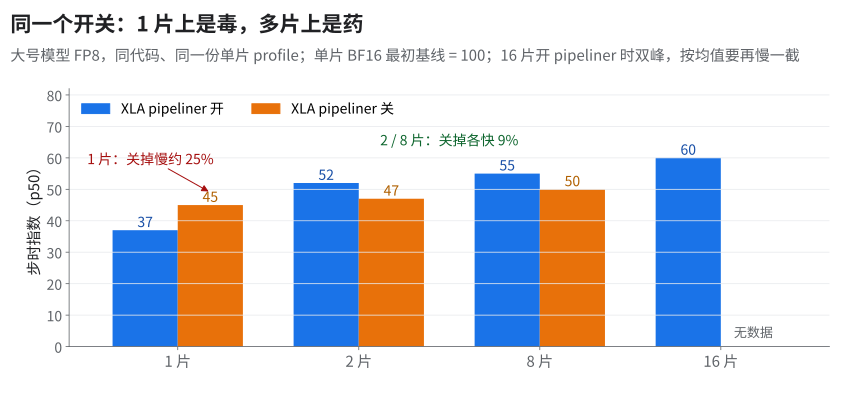
读图：开 pipeliner 是单片最优，跨片不成立 [推断]。
16.1 先分清两个「pipeliner」
| 名字 | 是谁的 | 干什么 | 怎么开关 |
|---|---|---|---|
XLA collective pipeliner（collective-pipeliner-forward） |
XLA 上游，默认开 | 圈末通信挪进下一圈；不要 profile，JIT/AOT 都生效 | XLA_FLAGS=--xla_disable_hlo_passes=all_gather_decomposer,collective-pipeliner-forward 关掉（10+ 片 JIT 基线同款），即本书说的「关 pipeliner」 |
| 反向 AB 流水 + placement pass | HLO 通信重排（私有）（含跨迭代 DCN 调度） | 交错 AG/RS，按 cost profile 搜落点（§12、§13） | 随 HLO 通信重排一起开；生效范围见下框 |
本书说的开 / 关 pipeliner 只切第一个，自写的 pass 都开。
💡HLO 通信重排在哪种模式下生效（全书以这段为准）
- 能力：pass 本身 JIT 和 AOT 都能跑（默认关）。JIT 下训练进程启动时自己多编一遍。
- AOT 加载时：训练进程加载预编译产物，不再重编；生效与否完全取决于生成产物时带没带同一套 HLO 通信重排配置；没带就静默跑未优化的图（§7 静默失效清单）。
- CI 规定：CI loss 校验用 JIT 校验模式（TPU 上 JIT）时强制关 HLO 通信重排并清空 cost profile 输入，不管配置怎么写；AOT 模式保留原配置，生产数都走这条。
- 所以：书里所有 JIT 数（09 的 JIT 对照、10+ 片 JIT 基线）都是 HLO 通信重排关；「只在 AOT 开」是 CI 和生产配方的规定，不是 pass 做不到。
上游第三组开关对这个模型无效：xla_should_allow_loop_variant_parameter_in_chain、xla_should_add_loop_invariant_op_in_chain、xla_tpu_enable_ici_ag_pipelining（OpenXLA · XLA Flags Guidance；与 pipeliner 的关系未核）都要求 AG 输入是循环不变量，专家权重不是（§6 根因 ①）。
16.2 为什么多片上关掉反而快
怎么考虑的：多片开 pipeliner 时编译期 temp 已超 92 GiB 的 placement 准入线，单片没碰线；多片 profile 又不含 DCN。两条都指向「pipeliner 想提前，但多片上提前不了」。
读图：比两根显存柱和红虚线；下半「超线被拒」是推断，判据见下框。
为什么：pipeliner 拿显存换提前量；多片上显存不够，提前不了，通信就露出来。
- 准入线是 placement 的 92 GiB（§13.2），不是运行时实测的 94.74 GiB。
- 数字：多片（2 / 8 / 16 片）开 pipeliner 时 temp 约 93 GiB（离运行时可用上限 94.74 GiB 只剩一两 GiB），超准入线约 1 GiB，关掉降到约 83 GiB（这是 09 那套对照配置的数，10+ 片 AOT 中间档另见 03 §8）；单片开 / 关 pipeliner 都约 87 GiB，没碰线。
- 推断链见上图 [推断]；profile 又不含 DCN，挪的依据也是错的。
- 判据：placement 在调度后用自己的显存估算、不看最终 temp，书里 temp 与实机峰值差 −8 到 +4 GiB（06 §10），所以 93 只当线索；判据是多片开 / 关 pipeliner 时 placement 的接受 / 拒绝计数。
GPU 上相当于：开 pipeliner ≈ FSDP 把本层梯度 reduce-scatter 放到独立 stream、和下一层反向计算重叠（通信往后推，不是 prefetch 那样往前提）；显存余量卡住提前量 ≈ FSDP（v1）
limit_all_gathers：为防显存超分配，CPU 侧同步，只许当前层和预取的下一层两份参数同时在（类比）。把握：推断 · 出处：openxla/xla
collective_pipeliner.h类注释（x_prev改写示例，pipeliner 机制本身源码证实）；本书 §13.2 准入线、09 的「抓多片 cost profile 再上多片」
16.3 为什么多片不能沿用单片 profile
- profile 里没有 DCN：单片 trace 只有 ICI，DCN 只能估。
- HLO 通信重排在多片上默认关；默认开的前提是有同片数（DP>1）真机采的 cost profile。
- profile 对了也未必排得对，placement 不建模抖动 [推断]：
- 带宽：DCN 每芯片 12.5 GB/s（100 Gbps），比 ICI 低一到两个数量级：对每芯片总量 1,200 GB/s 约 96 倍，对单轴 200 GB/s 约 16 倍 [推断：ICI 是双向口径、DCN 是出向口径，没统一]。
- 延迟：单独发起一次集合通信有 21 ms 地板和抖动（程序内串行摊约 9.6 ms/个，估每层开销用这个；03 §2），比 ICI 一跳（约 1 µs，Scaling Book）高四个数量级 [推断：21 ms ÷ 1 µs ≈ 2 万倍；分子含 Python 派发和上百个进程取最大，分母是纯链路单跳，只当量级感]。
16.4 怎么开 / 换模型怎么判
顺序：先单片复现再逐刀拆（见 09 单片复现）→ 再多片，采 DP>1 真机 profile 重编，和关 pipeliner 比 → 口径只比同片数、同 profile 来源。
换模型怎么判（[推断]，书里步时 A/B 只有 1 / 2 / 8 片三个点，16 片只有 temp）：pipeliner 拿 HBM（缓冲多活一圈）换跨圈重叠，排法又靠 profile。看两个能测的量：
- 你的 cost profile 里有没有 DCN 通信（单片采的没有，§16.3）。
- 开 pipeliner 时的编译期 temp 离 placement 准入上限（容量 − 4 GiB）还差多少；只当线索，判据见 §16.2 框。
任一项缺（profile 不含 DCN，或 temp 已贴近 / 超过准入上限），先试关 pipeliner；两项都不缺，同片数开 / 关各跑一次比。
只有上游、没有 placement 计数时的判据 [推断]：同片数、同 profile 来源，开 / 关 pipeliner 各编一次、各跑一段，比两样——稳态步时 p50（快的赢，落在噪声带里按显存余量选），和开 pipeliner 时编译期 temp 离 92 GiB 的 placement 准入线（容量 − 4 GiB，上游没有 placement，这里只当 HBM 余量参照）还差多少。规则写法和补测步骤见 11 B01 与场景开关表。
- 约 +25%：单片 FP8 + HLO 通信重排满配关 pipeliner（指数 37 → 45，09 阶梯第 1 级）。
- 约 +3%：单片 BF16，decomposer 和 pipeliner 两个 pass 一起关（单次 A/B）；pipeliner 单项未单独测。
上游 pipeliner 配置里还有 max_pipelining_per_loop（注释写它用来控显存压力），可以只推迟一部分通信，介于开和关之间；TPU 是否暴露这个开关未核，也未试。
17.现在停在哪、每刀值多少、还没解决的
17.1 1 片上通信藏到什么程度（大号模型 FP8，指数 37）
| 通信 | SparseCore 执行并集（占步时） | TensorCore 暴露（占步时） |
|---|---|---|
| ReduceScatter | 约 45% | 5% |
| AllGather | 约 30% | 2–3% |
| AllReduce | 1–2% | 1–2% |
| 三类合并 | 约 80% | 9% |
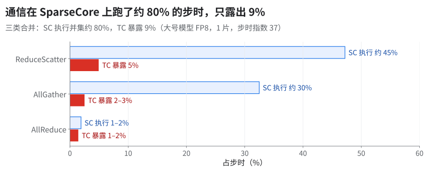
藏住网络，冒出本地搬运：和指数 44 的 FP8 配置比，RS/AG/AR 暴露区间并集从约 15% 压到 9%（这个 15% 不含本地 gather，和开头概览里的「约 15%」不是同一个量），本地 gather offload 涨到约 6%（分模块 profile 与开头的指数 37 不是同一次测量）。
17.2 每个 pass 各值多少（阶梯 + knockout）
阶梯（从满配、开 pipeliner 的指数 37 起逐级拆）Δ 依赖顺序；knockout（knockout 基线：满配关 pipeliner，指数 45；在它上面只关一项）与顺序无关；机制见 09。
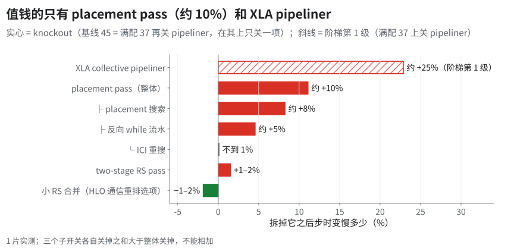
| 刀 | 拆掉它的代价 | 口径 |
|---|---|---|
| XLA collective pipeliner | 约 +25%（§16） | 阶梯第 1 级（基线 37） |
| placement pass（整体） | 约 +10%（指数 45 → 50） | knockout（基线 45） |
| └ placement 搜索 / 反向 while 流水 / ICI 重搜 | 约 +8% / 约 +5% / 不到 1% | knockout（基线 45） |
| asymmetric loop | 约 +10%（§14） | knockout（基线 45） |
| two-stage RS pass | 1–2% | knockout（基线 45） |
| 小 RS 合并 | 关掉反而快 1–2% | knockout（基线 45） |
| 整套 HLO 通信重排 | 关掉：指数 37 → 51（反过来说，开它省约 30%） | 09 §2 两行对比（51 vs 37） |
读图：小 RS 合并、two-stage 正负号随别的开关翻转；关 placement 编译期 temp 少一截；关小 RS 合并编译期 temp 多约 7 GB，HBM 紧时更不能关。
机制：一刀值多少，取决于别的 pass 给它留了多少空档；空档由 placement、pipeliner、车道顺序共同决定，所以同一刀在不同组合里能从正变负（小 RS 合并把 RS 绑到层尾，窗口在就藏住、被占就暴露；two-stage 一拆二，多出的事件要再排车道）。判据：只在最终配方上量才算数（[推断]，见 09、§9、§10）。
17.3 代价 / 还没解决的
| 问题 | 证据 | 状态 |
|---|---|---|
| RS 仍只有 AG 约六成吞吐 | 吞吐比（整张量字节 ÷ 耗时）约 0.6，与 §1 基线 profile 的按趟约 2.8 倍不是同一组测量，不能互相换算 | open |
| two-stage RS 大小门槛：生产 500 MiB，A/B 倾向 100 MiB | 快 1–2%，接近噪声 | 没有定论，未进生产 |
| 双 SC 做 MoE RS（§15） | 保留 XLA 分配的做法慢 2–3%；libtpu flag + 自己的 profile 变快 | 10+ 片生产配方开着（整步收益没单独拆）；单片只在最快那组实验（34）里开，生产 nightly 仍是单 SC |
为 DCN 加的 prefer_async_allgather_to_allreduce |
疑似拖慢大号模型 1–2%（机制见 03） | open |
| placement 带来的 HBM 碎片 | 分配多一截 | open |
| 10+ 片 JIT 基线没开 HLO 通信重排 | 最大的单片杠杆缺席 | 10+ 片 AOT 中间档开了 → 指数 47；10+ 片生产配方指数 41（03） |
18.只有上游时：自研一个最小版重排
💡一句话结论最小版只做一件事：在 XLA 排好的序列里挪 start / done。不做跨迭代流水，不拆 RS，所以不用借 libtpu 的后端配置（§7）。钱主要在这一步（§13.4），它也最容易验证。实现需自行开发，这里只给它要守的约束和验收判据。
18.1 要守的约束
- 只在同一个 computation 里调顺序，不跨 while / conditional 边界，不改形状。
- start 不能早于它所有 operand 的定义；done 不能晚于它的第一个消费者；控制依赖原样保留。
- 显存：在飞的输入 buffer 活到 done 才释放（§13.1）；上限先照「容量 − 4 GiB」（§13.2），再拿实测校准。
- 每颗 SC 同时只跑一个通信（§13.2）。
- done 放在「中间的计算刚好盖住通信 + 1 ms」的位置，不是越早越好（§13.3）。
- fail-closed：判不清就不动这一对；报出动了几对，0 就当没生效。
- AOT 产物和编译缓存的 key 要带上重排配置，否则可能静默跑旧图（§7 静默失效清单）。
- 成本表：第一次没有 profile，先关掉重排跑一次抓 trace，再用它重编（§8）；旧 profile 可能比没有还糟，看命中率不看文件在不在。
18.2 怎么验证
| 查什么 | 怎么查 | 对的样子 |
|---|---|---|
| 只改了顺序 | 改前、改后的 HLO 都落盘，比较每个 computation 的（指令名，opcode）集合 | 集合、个数完全相同，只有顺序变 |
| 顺序合法 | 沿新序列走一遍，维护「已定义」集合 | 每条指令的 operand 和控制前驱都已定义；每个 done 前面有它的 start |
| 数值 | 同一 seed 跑几步 | 只改顺序，loss 应逐位一致 |
| 真生效 | pass 自己的计数；XProf 里 TensorCore 等 done 的时间 | 动了几对 > 0；等待时间下降（口径同 §17.1 的暴露列） |
测试必须带负例：手工把某个 done 挪到消费者之后、把某个 start 挪到 operand 之前，移动逻辑必须拒绝。
18.3 做不出来少拿多少
| 没做 | 书里的数 | 出处 |
|---|---|---|
| 整套 HLO 通信重排（单片） | 指数 51 → 37，约 −30% | 09 |
| 只缺 placement 一项 | 约 10% | §13.4 |
| profile 不重抓（同代码） | 约 7% | §8 |
| 小号模型整套 pass | 约 10% | §7 |
最小版没有跨迭代流水，也不拆 RS，所以循环边界那部分拿不到（§12）；它能拿回 placement 那 10% 的几成没测过，需自测，验收照 §18.2。
常被追问
- 循环边界：scan 一般一圈一层，KDA 几层一组编成一个 while；start、done 须同圈配对。XLA 原生 collective pipeliner（§16.1）不管显存，多片上和自写的 pass 抢显存：1 片两套都开，多片关掉 XLA 这套（§16.2）。
- AGRS vs RSAG：all-reduce ＝ 先 RS 后 AG、中间不夹计算；AGRS 是一段计算两头的一对通信（§1），FSDP / sequence parallel / MoE token 派发都是，反向时二者互换（互为转置）。
- RS 对 AG 按趟比：一趟 RS 与一趟 AG 字节相同（假设元素类型相同，未核；RS 若按 f32 搬，字节就不止），理论差不多；按 §1 的约 1.4 倍折算，单趟约 2.8 倍（假设两趟 AG 等长 [推断]）。